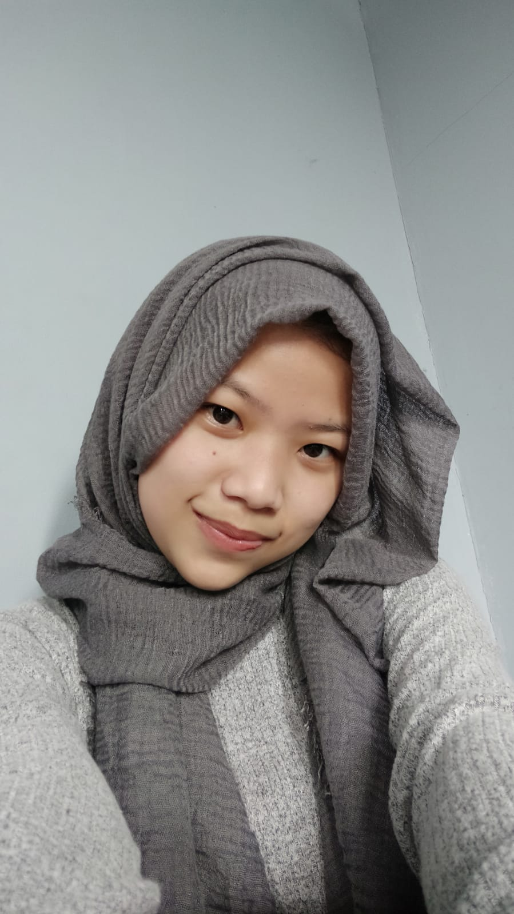

Nazifa Umar
HALO!, Nama saya Nazifa Saat ini saya merupakan siswi kelas 10 Program Keahlian Pengembangan Perangkat Lunak dan Gim (PPLG) SMK WIKRAMA BOGOR. Saya ingin mengembangkan diri di dalam bidang programer. Ingin berkenalan? Hubungi saya melalui Instagram atau email.
| Sekolah | Tahun | |
|---|---|---|
| awal | akhir | |
| SMK Wikrama Bogor | 2021 | sekarang |
| SMP PGRI GADOG | 2018 | 2021 |
| SDN Cikopo Selatan | 2012 | 2018 |
PENGALAMAN
Anggota Pramuka SMP PGRI Gadog Mengikuti Latihan, menghadiri acara latihan gabungan yang di adakan oleh KWARAN bersama SMP lain.
PRESTASI
Rangking 1, 2 dan 3 SD kelas 3 semester 1 dan 2, kelas 4 semester 1 dan 2, kelas 5 semester 1 dan 2, kelas 6 semester 1.
Rangking 3 SMP kelas 7 semester 1 dan 2, kelas 8 semester 1 dan 2